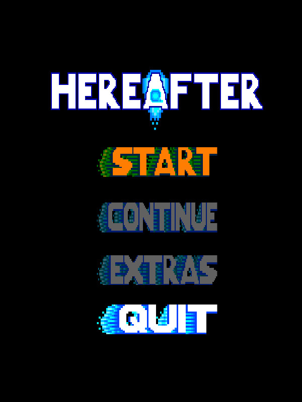

Hereafter
Hereafter
Details
|  | |
| Playtime | Not Played |
| Last Activity | Never |
| Added | 15/04/2020 |
| Modified | Never |
| Completion Status | Not Played |
| Source | Steam |
| Platform | PC |
| Release Date | 26/10/2017 |
| Community Score | 70 |
| Critic Score | |
| User Score | |
| Genre | Action Adventure Early Access Free to Play Indie |
| Developer | Brown Studios |
| Publisher | Brown Studios |
| Feature | Partial Controller Support Single Player |
| Links | PCGamingWiki Community Hub Discussions Guides Store Page News |
Description
A robotic experiment considered to be a failure by its creator suddenly reboots from its forced sleep by some unknown means to discover that not only did it have no memory of who it was or why it was there, but that its creator had long since abandoned his laboratory and left it to ruin. As the experiment embarks on a mission to seek out its missing creator in a search for answers to its existence, will it find the light of redemption that it longs for, or will it find a dark and terrible truth?
Story Summary and Game-play Synopsis
- Deep in an old forgotten laboratory, a failed experiment reboots from its sleep. With no memories, it now must explore the many different areas of the extensive complex to hopefully find some answers concerning its origins and the disappearance of its creator.
- With the help of MUSE, an intelligent AI created by and also abandoned by the same creator to monitor and manage various extensive experiments, the player will explore diverse environments filled with a myriad of unique enemies in the forms of other failed experiments which have been left to roam the abandoned facility as they please creating all kinds of havoc and especially making problems for the poor AI, MUSE, who wants nothing more than a well-organized system of experimental inventiveness.
- Make use of the Data File system to slowly uncover the larger story as you find various Data Files around the facility and bring them back to MUSE for decoding.
- Interact with a host of intelligent characters, both friends and foes, to make your way through the long abandoned complex on your search for answers!
- Equip a multitude of diverse weapons and armors found throughout the complex to arm yourself against the hoard of unruly experiments. Using a combination of both melee as well as ranged weapons to customize your play-style!
- Solve puzzles and traverse challenging environments on your journey to discover the truth of your origins and the reason behind your creator's disappearance!
- Take advantage of a generous save terminals system as you make your way deeper into the dangerous laboratory, it's no fun to fight through the same areas again and again upon defeat, or skip them all and attempt to beat the game with a single life! If you think you're skilled enough to do so!
- Play around with a rocket boots jump boost system that actually takes some skill to fully master! Players who can master the timing of this physics propelled force will find it easier to traverse the levels of the game than those who don't!
- Take advantage of the odd currency system involving metal, medals, which has somehow developed among the more intelligent experiments in the facility to provide some means of payment for goods and services which have sprung up in their creator's absence and buy useful items and upgrades from the shop to help you in your journey.
- And of course....Challenging Boss Fights! Fight a number of challenging bosses, as well as regular enemies which may be considered to be mini-bosses by some, that block your path to the answers you seek!
About the Game's Development and Development Team
- This is the first attempt at making a video game by our 3 person development team of brothers. One person uses the pixel software "Aesprite" to create the sprites and pixel art and also composes the unique music while the second uses "Unity 2D" to bring it all together with the programing. The third offers encouragement, testing, criticisms, manages the store page, keeps track of discussions on the discussions page, and other support when needed.
- As this is our first attempt at making a video game, we are of course very eager to see what the Steam Community thinks about our work and gladly accept any input and constructive criticism as well as any helpful info on how to make our game better!
- The Art Style and Music Style are intended to be reminiscent of older 2D pixel games such as "Castlevania" and "Megaman".
- It has been decided to place the game in Early Access as it may take some time to fully complete it as both developers have many other life obligations such as work and school though both also greatly desire to get the full game finished as soon as possible!
- The demo includes 2 levels. The goal for the finished game is currently 10 levels though more may be added as the development team is always thinking of more content to add to the game!
- The demo is controller compatible, with keyboard also being an option.
- This game is a work of love so try it out and let us know what you think! Helpful suggestions to improve it are always welcome! We are especially interested in any tips and tricks that fellow players may have in the ways of coding the game to make it work better and function more efficiently!
- Players in the community are free to send their thoughts to us via posting in the discussions section of the store community page or by sending a message to our support email which can be found either by going through the Steam support process online or by viewing the discussion post in the discussions section of the store community page which will show it.
- Only Constructive Criticism though please!